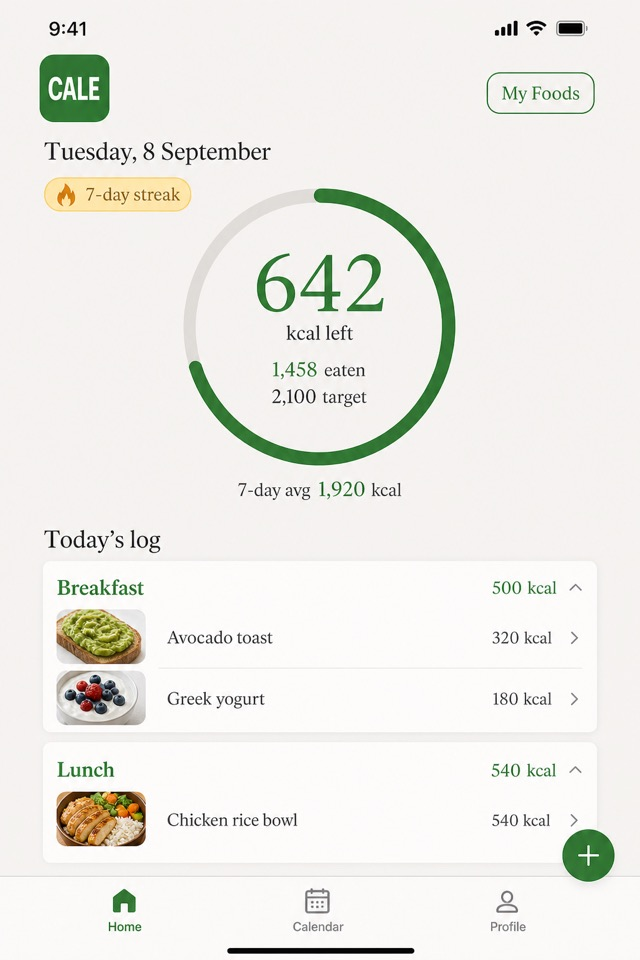
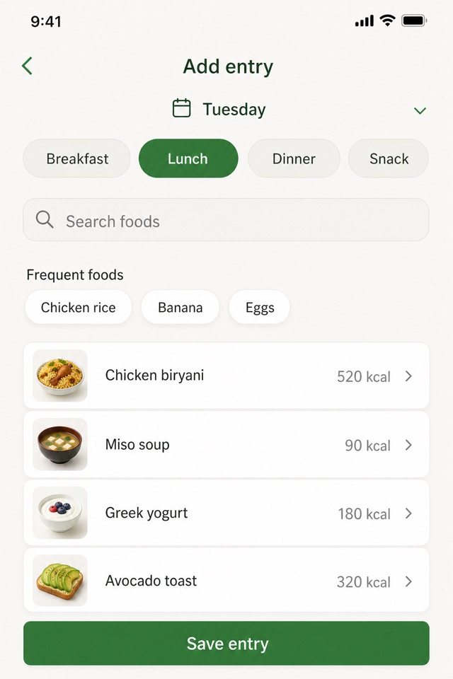
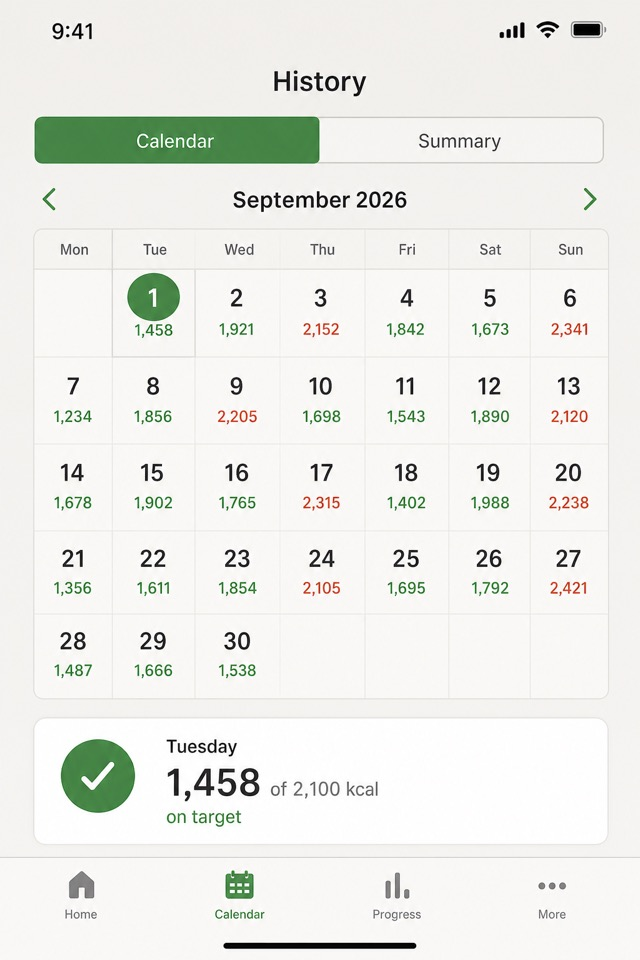
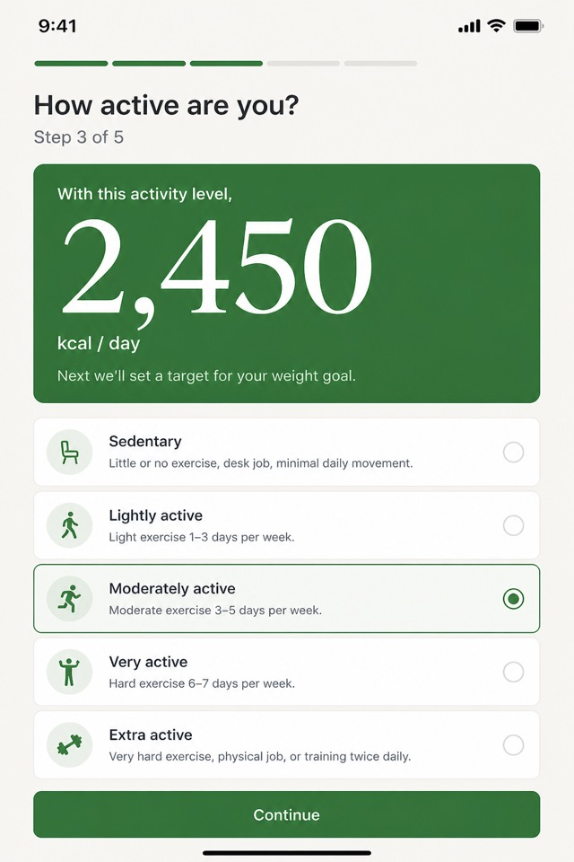

Personalized calorie target
Short setup using your body metrics, activity, and goal — lose, gain, or maintain. See the estimate as you go.
Calorie tracker for Android
CALE is a calm, food-forward calorie tracker. Set a personalized daily target, log meals in seconds, and see your progress — without the clutter of a diet app.
Free to download. Start without an account. Sign in later to sync.

A progress ring for the day, fast meal logging, honest history, and a target that updates as you set up.



Local-first logging, a food list that includes familiar meals, and reminders that stop once you’ve logged.
Short setup using your body metrics, activity, and goal — lose, gain, or maintain. See the estimate as you go.
Search foods, save your own, or enter calories. Breakfast, lunch, dinner, and snacks from the home screen.
Color-coded calendar and week or month charts. Older days keep the target you had then, not today’s.
Log on this phone first. Sign in with Google or email when you want to save and sync.
Core logging and your daily target work without a network. Sync when you’re back online.
Android widget for calories left, eaten vs target, streak, and today’s date — without opening the app.
Enter weight, height, age, activity, and goal. CALE calculates maintenance calories and a daily target.
Search the food list, reuse frequent foods, or type calories. Your ring updates as you go.
Check the calendar, keep a streak, and sign in when you want the same log on another phone.
Same Mifflin–St Jeor math CALE uses in the app. Estimate BMR, maintenance calories, a daily target, BMI, and a simple macro split — then download CALE to track the days.
Open the calculatorsExample for a 30-year-old, 70 kg, 175 cm, moderately active, maintain.
Yes. Download it on Google Play at no charge. You can start without an account and sign in later to sync.
CALE uses Mifflin–St Jeor for basal metabolic rate, then an activity multiplier for maintenance calories. Weight-loss or gain goals add a modest daily change, with floors of 1,500 kcal (men) and 1,200 kcal (women).
No. Continue without an account and keep data on this phone. Google or email sign-in is there when you want a backup.
Yes for logging, your target, and the built-in food list. Sync needs a signed-in account and a connection.
Free on Android. Start without an account.